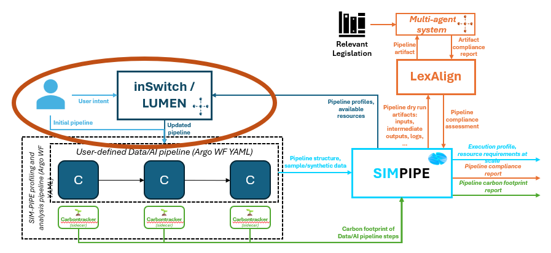

inLUMEN is a DATAPACT tool that evolves traditional AI/ML/data pipeline design tools into AI agent-driven co-design environments. The story begins with simple visions (or intents) and context provided by the user.
In DATAPACT, the intent translates to the pipeline goal: both in terms of structure, use and compliance goals. The context is the input data, code snippets, artifacts, constraints/rules/requirements, and resources.
The user remains in control of the design, however supported by dedidated agents whose role is to make these visions come to life. inLUMEN materializes their intents by generating the pipeline steps as a directed graph, and gives recommandations on compliance-strengthening design choices.
Additionally, it generates deployment artifacts such as containers and workflow blueprints needed to simulate/run the pipeline. Provenance is given via tracking reports on decisions taken by the user and agents during the design process.
The picture below shows the component in the DATAPACT architecture. 
[
inLUMEN's core functionality is provided by LLM-powered agents that serve as helpful assistants in pipeline design, translating high-level business-level intents to pure AI/data pipeline design choices. inLUMEN agents reason on user intents and context, draw pipeline steps, and give recommandations according to compliance insights provided by the user or via tool integrations. They can also support deployment artitfact generation, making pipelines deployable. The chat dialog window enables human-machine interactions to co-design pipelines. inLUMEN integrates with DATAPACT tools such as SIM-PIPE and LexAlign.
| Organisation (s) | License Nature | License |
| SINTEF | Open Source | TBD |
| What (types) | How(Process) | Values |
|---|---|---|
| Workflow steps generated accurately when full pipeline descriptions are given | User Evaluation | >80% |
| Avg. time from design handoff to first executable/valid workflow | System logging | <5 minutes |
| Workflow execution success rate of generated YAML > 80% in simulated environment | Integration test success | >80% |
| Project Links |
|---|
| Software GitHub Repository --> MADT4BC/LUMEN software https://github.com/SINTEF-9012/madt-neodash |
| Software GitHub Repository --> inSwitch software https://github.com/INTEND-Project/inSwitch |
Tool is provided as a service.
Software Requirements:
The custom version for DATAPACT is still under development. To try the current stable version, follow the installation steps below:
Step 1: Clone this repository on your computer.
Step 2: Navigate to the cloned project directory.
Step 3: Optional but recommended: copy .env.example to .env and adjust only the values you need.
The Docker setup derives CORS, frontend API URLs, Neo4J URI, and MinIO endpoint from the Compose service names, ports, and credential values, so you do not need separate CORS_ALLOWED_ORIGIN, NEO4J_URI, MINIO_ENDPOINT, NEO4J_API_BASE_URL, or VITE_*_API_URL entries for normal use.
Common values you may change include:
LLM_PROVIDER, LLM_BASE_URL, LLM_API_KEY, and LLM_MODEL for OpenAI-compatible LLM servicesFRONTEND_PORT, MINIO_API_PORT, NEO4J_API_PORT, LLM_API_PORTNEO4J_HTTP_PORT, NEO4J_BOLT_PORT, MINIO_S3_PORT, MINIO_CONSOLE_PORTNEO4J_AUTH, MINIO_ROOT_USER, MINIO_ROOT_PASSWORDAUTH_ENABLED plus the Keycloak values when enabling authenticationFor Keycloak SSO, keep the original integration contract: set AUTH_ENABLED=true and configure KEYCLOAK_JWKS_URL, KEYCLOAK_ISSUER, and KEYCLOAK_AUDIENCE in the root .env. The frontend infers the toolbox parent origin when embedded, so VITE_TOOLBOX_ORIGIN is not normally needed; it remains supported in frontend/.env only as a fallback for deployments that hide iframe referrers. Standalone frontend setups can also keep using VITE_AUTH_ENABLED and VITE_*_API_URL in frontend/.env; Docker Compose derives those values from the root .env unless explicitly overridden.
Step 4: Run the following command to build the docker containers:
docker compose up --build
Step 5: Wait for the stack to finish starting. The root compose file now:
connection image automaticallyconnection/ change.env or the UIStep 6: Configure an LLM provider. The default provider is OpenRouter:
LLM_PROVIDER=openrouter
LLM_BASE_URL=https://openrouter.ai/api/v1
LLM_API_KEY=sk-or-xxxx
LLM_MODEL=gpt-oss-120b
For OpenRouter BYOK, use your OpenRouter API key after adding the provider key in OpenRouter settings. Short model aliases such as gpt-oss-120b are accepted by inLUMEN and normalized before the request is sent.
You can also use Ollama Cloud with LLM_PROVIDER=ollama_cloud, LLM_BASE_URL=https://ollama.com/v1, LLM_API_KEY=..., and an Ollama Cloud model such as gpt-oss:120b. For a custom on-prem service, set LLM_PROVIDER=custom, LLM_BASE_URL=https://your-host.example/v1, LLM_API_KEY=..., and the model name exposed by that service. The UI configuration dialog supports the same OpenAI-compatible provider, base URL, API key, and model fields.
For the best macOS/Windows experience:
docker composeNote: building the containers may take around 5 minutes, please wait until Neo4J is fully started.
Note: Once the installation is complete, the default local endpoints are localhost:8080 (frontend), localhost:5003 (MinIO API), localhost:5001 (Neo4J API), localhost:5002 (LLM/agent API), localhost:7474 (Neo4J HTTP), localhost:7687 (Neo4J Bolt), localhost:9000 (MinIO S3 API), and localhost:9099 (MinIO console). These defaults can all be changed through .env.
Note: To log into MinIO, use the configured root credentials from .env. For security reasons, change these values before using the stack outside local development.
To open the editor, go to http://localhost:8080 by default, or the custom value you configured in FRONTEND_PORT. This will open the dashboard.
Backend services are currently offered at their configured localhost ports for Neo4J and MinIO. Neo4J uses NEO4J_AUTH, and MinIO uses MINIO_ROOT_USER / MINIO_ROOT_PASSWORD from .env.
The compose setup also exposes the internal APIs at the configured MINIO_API_PORT, NEO4J_API_PORT, and LLM_API_PORT values for the frontend and local debugging.
LLM agents use OpenAI-compatible Chat Completions endpoints. Configure OpenRouter, Ollama Cloud, or a custom on-prem endpoint in the dialog window or through the root .env file.
inLUMEN is still under development, any current users should expect unstable behaviour.
n/a
n/a